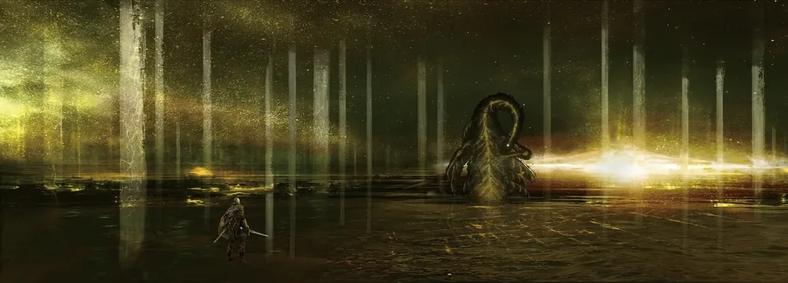

How to Beat the Elden Beast
The Elden Beast has a huge health pool, deals heavy Holy damage, and loves to fly away just when you get close. Prepare for those three problems and the fight gets a lot more manageable.

Before the fight
- Leave Holy weapons at home. The Beast resists Holy damage, so Sacred and Golden Order affinities are a waste here.
- Bring a Spirit Ash. The Mimic Tear or Black Knife Tiche splits the Beast's attention and buys you safe damage windows.
- Lean into status effects. Bleed (hemorrhage) and Frostbite both work and shred its large health bar.
- Mix your Flask of Wondrous Physick for the fight. Damage reduction or a flat attack boost both help in a long battle.
- Remember: no Torrent. You fight on foot, so pack a gap-closer or a ranged option for when it drifts away.
The fight, phase by phase
-
1. Elden Stars opener
The Beast almost always opens with Elden Stars, a long stream of homing golden projectiles. Sprint sideways (perpendicular to the Beast) instead of straight back, and most of them miss.
-
2. Close the distance
It constantly repositions and flies off. Don't panic-heal in the open. Use that time to sprint in, or throw a ranged skill so the trip isn't wasted.
-
3. The gravity pull & explosion
When it forms a glowing orb and pulls you in, sprint away immediately or dodge through the burst on the last moment. Getting greedy here is the most common death.
-
4. Holy sweeps and dives
Its sword sweeps and body slams are telegraphed, so roll into them, toward the Beast, to end up beside it for free hits.
-
5. Proc statuses, then stagger
Keep bleed or frost building. Heavy weapons can break its stance and stagger it, and you can follow up with a critical hit to take off a big chunk.
Best weapons for the fight
Use the filters to narrow the list by playstyle, then tap Save to loadout on any weapon to build your personal list. It is saved in your browser for next time.